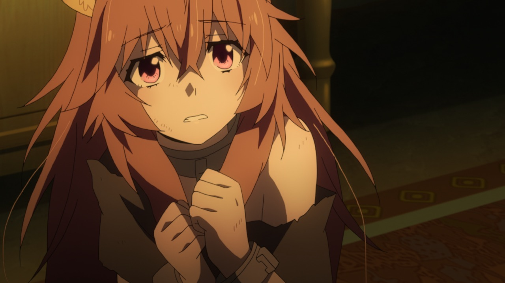
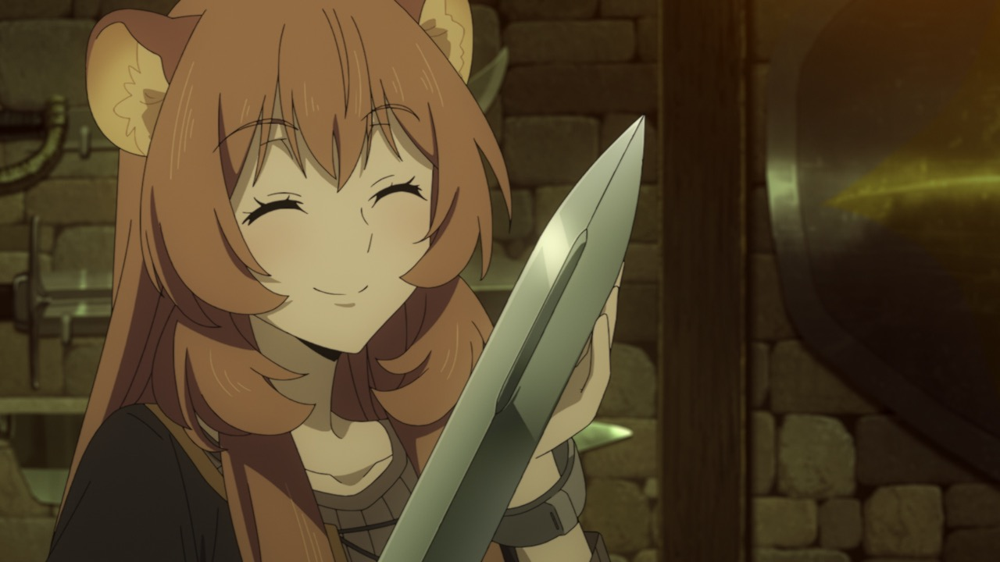
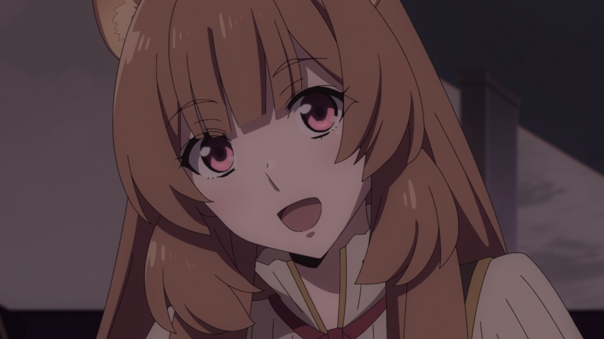
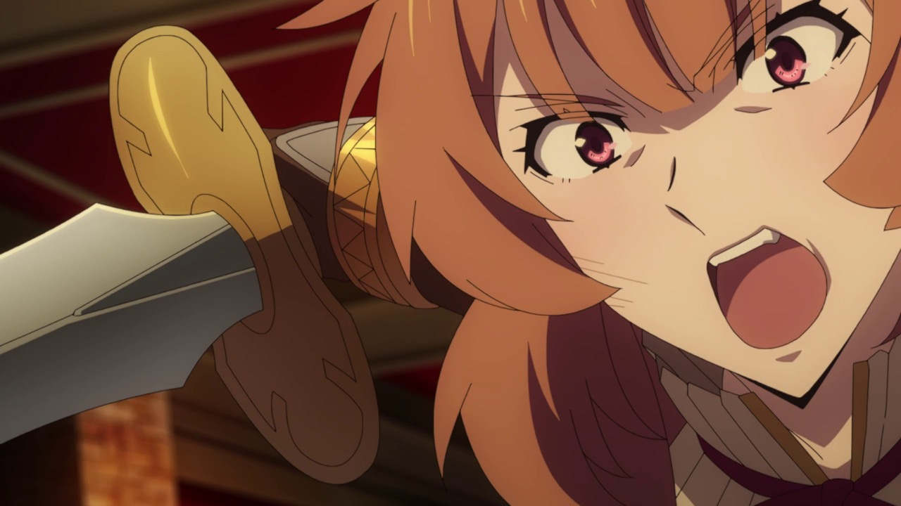
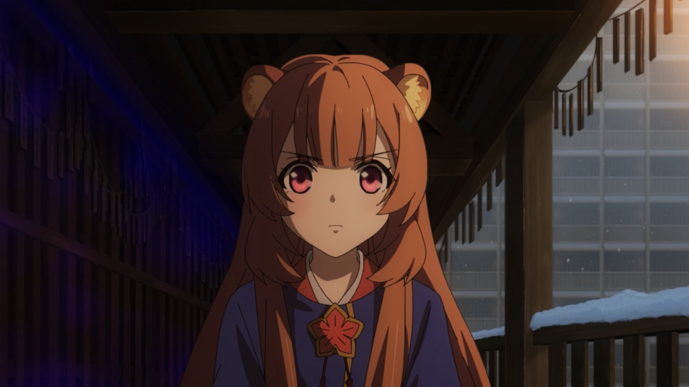

2. 작중 행적 (Story Arc)
비극의 시작과 구원의 런치 세트

▲ [공식 스틸컷 1기 2화] 나오후미와의 첫 만남 당시 어두운 감방에서 겁에 질려 떨고 있던 유년기 라프타리아
루롤로나 마을에서 평화롭게 살아가던 중 제1차 파도의 마물 습격으로 부모를 잃고, 마을 재건을 시도하던 중 노예 사냥꾼들에게 잡혀 혹독한 학대를 받았다. 영주 아이돌의 고문으로 절친 리파나를 잃고 마음이 꺾여있었으나, 나오후미에게 거두어져 따뜻한 식사(깃발 꽂힌 어린이 런치)와 약을 받으며 처음으로 인간다운 온기를 되찾는다.
"저는 당신의 검입니다" — 영혼의 맹세

▲ 에르하르트 무기점에서 새 검을 받고 기뻐하는 라프타리아

▲ [불후의 명장면] 모토야스 결투 직후 나오후미를 지켜낸 맹세
아인의 특성상 레벨업과 함께 신체가 10대 후반으로 급속 성장했다. 모토야스와의 부당한 결투로 노예문이 해제되었음에도 불구하고, 스스로 나오후미의 곁으로 달려와 "저는 당신의 검입니다! 아무리 괴로운 길이라도, 저는 당신을 따르겠어요!"라며 눈물로 맹세한다. 이 순간 나오후미의 깊은 트라우마가 치유되며 둘의 유대는 영원해진다.
영웅의 심장으로 복수를 넘어서다

▲ [공식 스틸컷 1기 15화 '라프타리아'] 과거의 원수 아이돌을 앞에 두고 결연한 의지로 검을 겨눈 장면
자신과 친구들을 고문했던 영주 아이돌과의 대치. 분노와 복수심에 휩싸일 뻔했으나 나오후미의 믿음 속에서 이성을 되찾고, 사적인 복수심이 아닌 소중한 이들을 지키기 위한 올바른 힘을 행사하며 진정한 영웅이자 어른으로 거듭난다.
도(刀)의 권속기 용사 등극과 무녀복

▲ [공식 스틸컷 2기 10화 '도의 용사'] 도의 권속기로부터 선택받은 직후 무녀복을 입고 각성한 라프타리아
쿄를 추적해 키즈나의 이세계로 전이된 후, 봉인되어 있던 전설의 무기 '도(刀)의 권속기'에게 자격을 인정받아 정식 권속기의 용사로 선택되었다. 노예문은 완전히 소멸되었으며, 전용 무녀복과 함께 초고속 발도술을 구사하는 최정상급 전력으로 발돋움한다.